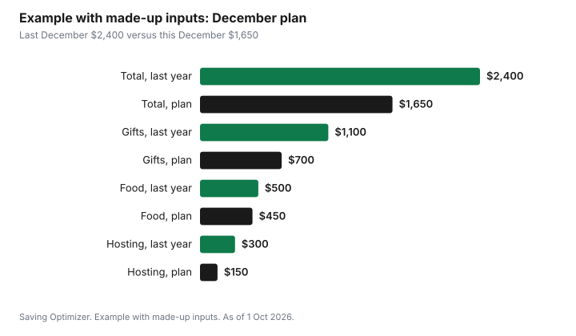

Events · Canada
A December Spending Plan for Canadians: Holiday Budget Worksheet
A December spending plan for a Canadian household is one page that lists every holiday cost for the month, gifts, food, hosting, travel, giving and the extras, against the money that will actually arrive before the bills do. In December 2026 the calendar shapes the plan: the Canada Child Benefit is scheduled for 11 December, CPP and Old Age Security for 22 December, Christmas falls on a Friday and Boxing Day on a Saturday, and the next Canada Groceries and Essentials Benefit payment is not until 5 January 2027. Write the plan in November, cap each line, and keep a column for January, because the credit card statement for December spending arrives after the holidays are over.
Key takeaways
- Put the whole month on one page: money in, then gifts, food, hosting, travel, giving, extras and a January column.
- Money in for December 2026: CCB 11 Dec, CPP and OAS 22 Dec. The next Canada Groceries and Essentials Benefit is 5 Jan 2027, after the holidays.
- Christmas is Friday 25 December and Boxing Day is Saturday 26 December. Canada Post is closed 25 and 28 December.
- Cap each line before Black Friday on 27 November. A sale only helps if the item is already on the page.
- Statistics Canada reported store food prices up 2.8% year over year in August 2026, so last December's food line is a floor.
- Example with made-up inputs: a $2,400 December becomes $1,650 with caps, a draw and a potluck.
Why December needs its own plan
December concentrates spending that most months spread out: gifts, larger meals, hosting, travel to family, charitable giving, party clothes and the small extras like wrapping, cards and tips. Several of those costs are also paid by credit card and show up on a statement in January, when income is ordinary again. A plan that treats December as a normal month with a few extras usually misses.
The fix is a single page that names every holiday line, puts a cap on each one, and lines them up against the income that will arrive in time. It does not need an app. A sheet of paper, a spreadsheet or a note on a phone works, as long as everyone in the household who spends can see it.
Step 1: money in, by date
Start with the money you will actually have. List each paycheque in December with its date, then each government benefit your household receives, then any money set aside in a holiday or sinking fund. The government payment dates matter because some arrive early in the month and some after Christmas.
| Benefit | December 2026 payment | Next payment | Notes |
|---|---|---|---|
| Canada Child Benefit (CCB) | 11 December 2026 | January 2027 | Paid earlier than usual in December |
| Canada Pension Plan (CPP) | 22 December 2026 | January 2027 | Same date applies to OAS |
| Old Age Security (OAS) | 22 December 2026 | January 2027 | |
| Canada Groceries and Essentials Benefit | No December payment | 5 January 2027 | Replaced the GST/HST credit in July 2026; paid quarterly |
If your household relied on a quarterly credit landing in early January to cover December bills, note that it will arrive after the holidays. Plan December's spending on what lands by the 24th, and treat anything after that as January money.
Step 2: the holiday lines
Use the same lines every year so the plan becomes a record you can learn from. A line you do not need this year can sit at zero.
| Line | What goes in it | Cap | Paid in December | Paid in January |
|---|---|---|---|---|
| Gifts | Partner, family, friends, coworkers, thank-you gifts, wrapping, cards | |||
| Holiday food | Groceries above a normal month, baking, Christmas dinner, treats | |||
| Hosting and parties | Drinks, potluck dishes, a host gift, party outfits | |||
| Travel | Gas, flights, trains, parking, pet sitting, a hotel | |||
| Shipping | Parcels and cards to other cities | |||
| Giving | Charitable donations, food bank, toy drives | |||
| Outings | Light shows, markets, concerts, skating | |||
| Buffer | The thing you forgot | |||
| Total |
Caps should come from the money-in column, not from what each line cost last year. If last year's total was higher than this year's money in, the plan has to change: fewer gifts, a draw, a potluck instead of a full dinner, or one outing instead of three.
Step 3: the dates that move money
Several dates in December 2026 change when you spend or when money arrives. Put them on the page beside the lines they affect.
| Date | What happens | Line it affects |
|---|---|---|
| Friday 27 November 2026 | Black Friday | Gifts, electronics |
| Friday 11 December 2026 | Canada Child Benefit payment | Money in |
| Early December | Check Canada Post's holiday mailing dates (not published as of 1 Oct 2026); its national Regular Parcel standard is up to 10 business days between major centres | Shipping |
| Tuesday 22 December 2026 | CPP and OAS payments | Money in |
| Friday 25 December 2026 | Christmas Day; Canada Post closed | Food, hosting |
| Saturday 26 December 2026 | Boxing Day sales | Gifts for next year, household items |
| Monday 28 December 2026 | Canada Post closed (Boxing Day observed) | Shipping, returns by mail |
| Tuesday 5 January 2027 | Next Canada Groceries and Essentials Benefit payment | January column |
Retail return windows matter too. Many stores extend holiday return periods for gifts bought in November and December, but the rules vary by store and by product. Keep receipts and gift receipts in one envelope or folder. The guide to holiday return windows covers how to read them.
Step 4: cut lines with structure, not willpower
The biggest savings in December come from changing the structure of a line, not from finding a slightly lower price on the same thing.
- Gifts: a family draw or Secret Santa replaces many gifts with one, under a shared cap. See the adult gift budget guide for rules people accept.
- Food: a potluck moves sides and dessert off the host's line. The same headcount-first method from the Thanksgiving dinner guide applies to Christmas dinner.
- Hosting: one gathering with a written menu costs less than three improvised ones.
- Travel: book early or shift the travel date. A trip on 23 December and one on 27 December can price very differently.
- Outings: choose free events first, such as community light displays, outdoor rinks and library programs. The guide to free and cheap outings lists library passes and municipal options.
- Shipping: send early to use slower, cheaper services, or send gift cards and e-gifts that do not need a parcel.
Step 5: groceries in a month of higher prices
Statistics Canada's Consumer Price Index for August 2026 showed prices for food purchased from stores up 2.8% from a year earlier, down from 3.1% in July, and the first time since July 2024 that grocery inflation was below headline inflation of 3.0%. Even with slower growth, December food will likely cost more than it did last December for the same basket. Use last year's December food spending as a minimum, then cut by changing the menu, not by hoping prices fall.
Plan the holiday menu by week. The first two weeks can carry baking ingredients bought on sale; the third week carries the big dinner; the fourth week runs on leftovers. A written menu also makes Boxing Day sales less tempting for food, because the fridge is already full. The grocery savings guide covers unit prices and loyalty programs.
Step 6: the January column
Anything paid by credit card in December will appear on a statement that is due in January or later. The January column on the worksheet makes that visible. If the January total is larger than the money you can put toward the card in January, the plan is borrowing from next month.
A rule that works for many households: December spending on a card is fine only if the full balance can be paid by the statement due date from money already set aside. If it cannot, move that spending to a smaller cap now. Credit card interest on a holiday balance carried into spring can cost more than any sale saved.
Example with made-up inputs: a family's December
These numbers are an example with made-up inputs. They are not prices or benefit amounts for any real household. A two-parent household with two children writes down last December's spending: $2,400, of which $1,100 was gifts, $500 food, $300 hosting, $300 travel, $100 outings and $100 giving.
For 2026 they cap gifts at $700 after an adult sibling draw, keep food at $450 by hosting a potluck Christmas dinner, cut hosting to $150 with one gathering instead of two, keep travel at $200 by driving on 27 December, pick free outings for $50, keep giving at $100, and hold a $0 buffer because the draw left slack. The total is $1,650. Of that, $300 is on a credit card that the household will pay from its holiday sinking fund when the January statement arrives.
| Line | Last December | This December (plan) |
|---|---|---|
| Gifts | $1,100 | $700 |
| Food | $500 | $450 |
| Hosting | $300 | $150 |
| Travel | $300 | $200 |
| Outings | $100 | $50 |
| Giving | $100 | $100 |
| Total | $2,400 | $1,650 |

Common mistakes
- Planning December on income that arrives in January, such as the January benefit payment.
- Setting caps from last year's spending instead of this year's money in.
- Forgetting shipping, wrapping and tips, which are small lines that add up.
- Shopping Black Friday before the gift line has names on it.
- Ignoring the January column and finding the bill in the new year.
- Not writing anything down, so next year starts from scratch.
After the holidays
In the first week of January, fill in the real numbers next to each cap. The difference between the plan and the actual is the most useful number in the whole exercise, because it shows which line ran over. Divide next year's total by 12 and start a holiday sinking fund in January; the sinking funds guide shows how. Next December, the money is already there.
Sources
- Government of Canada, Benefit payment dates, canada.ca, as of 1 Oct 2026. Canada Child Benefit 11 December 2026; CPP and OAS 22 December 2026; Canada Groceries and Essentials Benefit 3 July and 5 October 2026 and 5 January 2027.
- Canada Post, holiday closures, as of 1 Oct 2026. Closed 25 and 28 December 2026.
- Canada Post, Parcel Services delivery standards (canadapost-postescanada.ca, PDF updated 7 Sep 2026), as of 1 Oct 2026. Regular Parcel national standard 4 to 10 business days between major centres; 2026 holiday mailing dates not yet published.
- Statistics Canada, Consumer Price Index, August 2026, The Daily, 14 Sep 2026. Food purchased from stores +2.8% year over year; all-items +3.0%.
- Calendar: Black Friday is 27 November 2026; Christmas is Friday 25 December 2026; Boxing Day is Saturday 26 December 2026.
- The household's $2,400 and $1,650 totals and every amount in the example table and chart are an example with made-up inputs.
Frequently asked questions
How do I make a holiday budget for December?
Put the month on one page. List money in by date, then lines for gifts, food, hosting, travel, shipping, giving, outings and a buffer. Cap each line from the money you will have, and add a January column for anything paid by credit card.
When is the Canada Child Benefit paid in December 2026?
The Canada Child Benefit is scheduled for 11 December 2026, earlier than its usual date in other months. CPP and Old Age Security are scheduled for 22 December 2026.
When is the next Canada Groceries and Essentials Benefit payment?
The Canada Groceries and Essentials Benefit, which replaced the GST/HST credit in July 2026, was paid on 3 July and 5 October 2026, and the next payment is 5 January 2027, after the holidays.
Is Canada Post open between Christmas and New Year's 2026?
Canada Post is closed on Friday 25 December and Monday 28 December 2026. As of 1 Oct 2026, Canada Post had not published its 2026 holiday mailing dates, so plan from its delivery standards and check for the official dates closer to December.
How much should a family spend in December?
There is no standard amount. Use the money that will arrive by 24 December and any holiday savings as the ceiling, and set caps for each line so the total fits. If last year's spending is higher than that, change the structure with a gift draw, a potluck or fewer outings.
Researched and drafted with AI assistance and fact-checked against official Canadian sources. How we create content.
Disclosure: Saving Optimizer may earn a commission if a partner link is added later, such as a budgeting app or cash-back offer type. No partnership is claimed on this page, and no product is ranked. Education only. Confirm benefit dates on canada.ca.